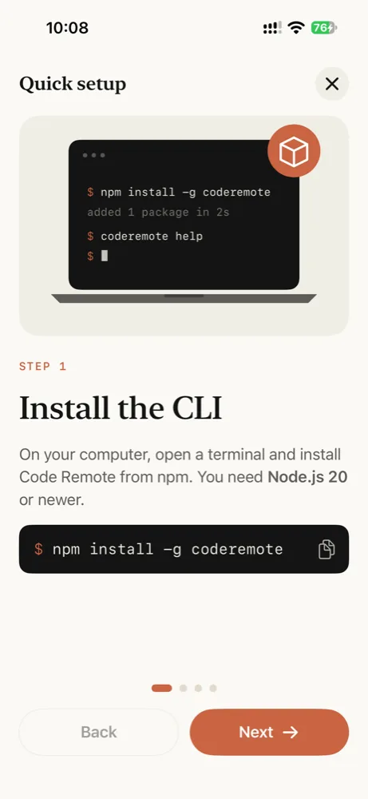
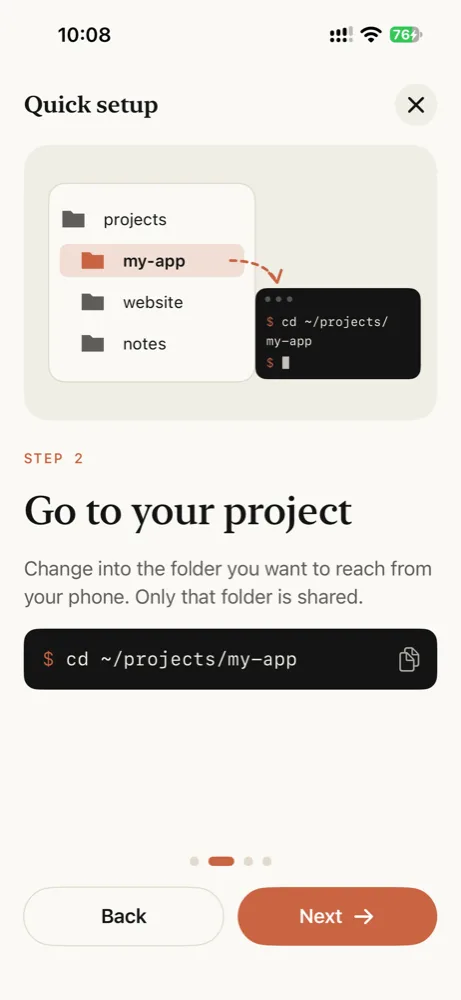
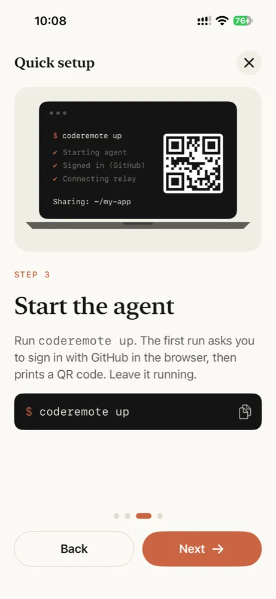
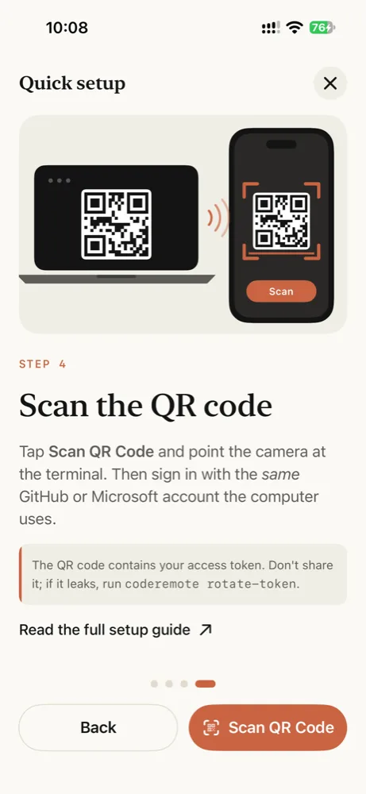

Cài đặt
Một lệnh trên máy tính, một lần quét trên điện thoại.
Yêu cầu
- Một máy Mac hoặc PC Windows 10/11. Linux dự kiến chạy được nhưng chưa được kiểm thử.
- Node.js 22 trở lên, chỉ khi bạn cài bằng npm. Các script cài đặt dùng bản của bạn khi đủ mới và nếu không thì tải một bản chỉ dành riêng cho coderemote; Homebrew mang theo bản riêng.
- Một tài khoản GitHub hoặc Microsoft, dùng để đăng nhập Microsoft Dev Tunnels.
- App Code Remote trên iPhone, tải từ App Store.
Bạn không cần SSH, cổng mở, VPN hay VS Code.
1. Cài CLI
macOS và Linux
Script cài đặt, trong Terminal. Nó dùng Node.js của bạn khi đó là bản 22 trở lên; nếu không nó tải Node.js vào ~/.coderemote/runtime, chỉ dành riêng cho coderemote, và thêm vào PATH của bạn.
Cài đặt
curl -fsSL https://raw.githubusercontent.com/CodeRemoteApp/coderemote/main/install.sh | sh
Cập nhật
coderemote update
Windows
Script cài đặt, trong PowerShell trên Windows 10 hoặc 11. Nó dùng Node.js của bạn khi đó là bản 22 trở lên; nếu không nó tải Node.js vào %USERPROFILE%\.coderemote\runtime, chỉ dành riêng cho coderemote, và thêm vào PATH của bạn. Sau đó hãy mở terminal mới.
Cài đặt
irm https://raw.githubusercontent.com/CodeRemoteApp/coderemote/main/install.ps1 | iex
Cập nhật
coderemote update
npm
Trên mọi hệ thống có Node.js 22 trở lên và npm. pnpm, yarn và bun cũng dùng được.
Cài đặt
npm install -g coderemote
Cập nhật
coderemote update
Homebrew
Trên macOS và Linux, từ tap của Code Remote. Homebrew cài kèm Node.js.
Cài đặt
brew install coderemoteapp/tap/coderemote
Cập nhật
brew upgrade coderemote
Kiểm tra bằng coderemote --version. Trên Linux, hỗ trợ terminal được biên dịch khi cài: xem Cài đặt trên Linux bị lỗi nếu nó không được.
2. Chia sẻ một thư mục
Vào thư mục bạn muốn truy cập từ điện thoại và khởi động agent:
$ cd ~/projects/my-app $ coderemote up
Lần chạy đầu tiên tự thiết lập:
- Nó tải Dev Tunnels CLI của Microsoft vào
~/.coderemote/bin(một lần, có kiểm tra chữ ký). - Nó mở trình duyệt để đăng nhập bằng GitHub. Để dùng tài khoản Microsoft, hãy chạy
coderemote login --microsofttrướcup. - Nó tạo một đường hầm riêng cho máy tính này và in ra mã QR.
✔ Starting agent ✔ Checking dev tunnels sign-in ✔ Connecting to the relay Sharing: /Users/you/projects/my-app Access: sign-in required as you (GitHub) Web: https://…devtunnels.ms/#token=… App: vsremote://pair?url=…&token=… [QR code]
3. Ghép đôi iPhone
Tải app Code Remote miễn phí từ App Store về iPhone, nếu bạn chưa có.
Quét mã QR bằng Camera của iPhone, hoặc nhấn + trong app và quét ở đó. Sau đó app yêu cầu bạn đăng nhập qua trình duyệt hệ thống bằng cùng tài khoản GitHub hoặc Microsoft mà máy tính dùng. Passkey và "Sign in with Google" đều dùng được.
Xong rồi. Tệp, Git và Terminal của thư mục được chia sẻ giờ đã có trên điện thoại.




Mã QR và các liên kết chứa access token của bạn. Đừng đăng chúng ở đâu cả. Nếu một cái bị lộ, hãy chạy coderemote rotate-token.
Dùng hằng ngày
Giữ terminal mở
coderemote up chạy ở foreground. Nhấn Ctrl+C hoặc đóng cửa sổ để ngừng chia sẻ; các phiên terminal kết thúc cùng nó.
Giữ máy tính luôn thức
Một máy đang ngủ không trả lời được điện thoại. Trên laptop Mac, hãy chạy agent dưới caffeinate để Mac thức trong khi nó chạy:
$ caffeinate -i coderemote up
Trên Windows, đặt Settings › System › Power để máy không ngủ khi đang cắm điện.
Terminal trên Windows
Terminal bạn mở từ điện thoại chạy PowerShell: pwsh khi đã cài PowerShell 7, nếu không là Windows PowerShell.
Ghép đôi vẫn còn sau khi khởi động lại
URL tunnel và token giữ nguyên giữa các lần chạy, nên điện thoại đã ghép đôi tự kết nối lại ở lần chạy coderemote up tiếp theo. Bạn chỉ phải quét lại sau rotate-token.
Cập nhật hoặc gỡ cài đặt
coderemote up cho bạn biết khi có phiên bản mới hơn, dưới các liên kết ghép đôi. coderemote update cài nó theo cách bạn đã cài coderemote: bằng npm (hoặc pnpm, yarn, bun), Homebrew, hoặc vào Node.js riêng của script cài đặt. Chạy lại script cài đặt cũng làm đúng như vậy.
$ coderemote update
Để gỡ cài đặt, dừng các agent trước, rồi gỡ coderemote và thư mục của nó, nơi chứa token và cài đặt tunnel:
macOS và Linux, cài bằng script
$ coderemote stop --all $ rm -rf ~/.coderemote
Sau đó xóa các dòng # coderemote mà script đã thêm vào tệp khởi động shell của bạn (~/.zshrc, ~/.bashrc hoặc ~/.profile). Nếu script đã dùng Node.js của bạn, nó cài bằng npm: hãy chạy thêm npm uninstall -g coderemote.
Windows, cài bằng script
PS> coderemote stop --all PS> Remove-Item -Recurse -Force ~\.coderemote
Sau đó xóa %USERPROFILE%\.coderemote\runtime\bin khỏi Path của người dùng trong Edit environment variables for your account. Nếu script đã dùng Node.js của bạn, nó cài bằng npm: hãy chạy thêm npm uninstall -g coderemote.
npm
$ coderemote stop --all $ npm uninstall -g coderemote $ rm -rf ~/.coderemote
Homebrew
$ coderemote stop --all $ brew uninstall coderemote $ rm -rf ~/.coderemote
Xóa ~/.coderemote để lại các tunnel của máy tính này trên tài khoản Dev Tunnels. Để xóa cả chúng, hãy liệt kê bằng coderemote tunnels và xóa các tunnel của máy này bằng coderemote tunnels delete <id>... --force trước khi gỡ coderemote.